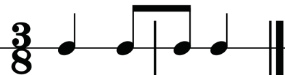
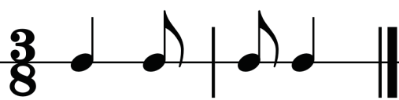
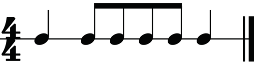
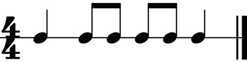
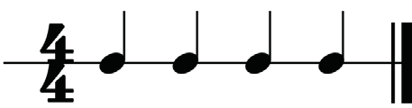
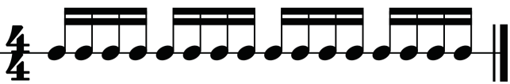

connected to the first beat of the next measure. Figure 1.30 shows how to avoid beaming across a bar line.


Figure 1.30: How to avoid beaming across a bar line
(b) Do not beam across the centre of a measure: In four-four time signatures, for example, the centre of the measure lies between the second and third beats. These beats are always separated to ensure a clear rhythm for the reader. Figure 1.31 shows how to avoid beaming across the centre of a measure.


Figure 1.31: How to avoid beaming across the centre of a measure
(c) Observe the total number of semiquavers to be grouped: Normally, in a time signature where a crotchet is the main beat, a maximum of four semiquavers can be grouped together. Figure 1.32 shows the grouping of semiquavers in a four-four time.


Figure 1.32: Grouping of semiquavers in a four-four time
(d) Note grouping includes beaming notes that belong to the same beat. However, this is not the case for all time signatures. For example, notes that do not belong to the same beat can be beamed in three-eight and four-four times. In three-eight time, it is acceptable to beam three quavers or six semiquavers as shown in Figure 1.33.